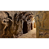

<!DOCTYPE html>
<html lang="en">
 <head>
<!-- Favicon -->
<link rel="shortcut icon" href="../../favicon.ico">
  <meta charset="utf-8"/>
  <title>
   The Templar town with a hidden underground 'twin'
  </title>
  <meta content="Post on /v/Conspiracy from 2020-08-19 by Heebro." name="description"/>
  <meta content="The Templar town with a hidden underground 'twin'" property="og:title"/>
  <meta content="Post on /v/Conspiracy from 2020-08-19 by Heebro." property="og:description"/>
  <link href="../../static/css/page.css" rel="stylesheet"/>
  <meta content="https://voat.conspiracy.hackliberty.org/thumbnails/b2/aa/b2aa39d3-7e27-4d1d-b9e1-eeb36071f31a.png" property="og:image"/>
  <meta content="https://voat.conspiracy.hackliberty.org/v/conspiracy/3981909.html" property="og:url"/>
  <meta content="width=device-width, initial-scale=1" name="viewport"/>
  <link href="https://voat.conspiracy.hackliberty.org/v/conspiracy/3981909.html" rel="canonical"/>
  <meta content="article" property="og:type"/>
  <meta content="Voat /v/Conspiracy Archive" property="og:site_name"/>
  <meta content="en_US" property="og:locale"/>
  <meta content="summary_large_image" name="twitter:card"/>
  <meta content="The Templar town with a hidden underground 'twin'" name="twitter:title"/>
  <meta content="Post on /v/Conspiracy from 2020-08-19 by Heebro." name="twitter:description"/>
  <meta content="https://voat.conspiracy.hackliberty.org/thumbnails/b2/aa/b2aa39d3-7e27-4d1d-b9e1-eeb36071f31a.png" name="twitter:image"/>
 </head>
</html>
<body class="dark">
 <header>
  <nav class="navbar navbar-dark bg-primary">
    <a class="navbar-brand" href="../../index.html">/v/Conspiracy Archive</a>
    <div class="navbar-collapse">
      <ul class="navbar-nav">
        <li class="nav-item">
          <a class="nav-link" href="../../date/page-1.html">Date</a>
        </li>
        <li class="nav-item">
          <a class="nav-link" href="../../comments/page-1.html">Comments</a>
        </li>
        <li class="nav-item">
          <a class="nav-link" href="../../search.html">Search</a>
        </li>
        <li class="nav-item dropdown">
          <a class="nav-link dropdown-toggle" href="#" id="navbarDropdown" role="button" 
             data-toggle="dropdown" aria-haspopup="true" aria-expanded="false">
            subreddits
          </a>
          <div class="dropdown-menu" aria-labelledby="navbarDropdown">
            <a class="dropdown-item" href="https://reddit.conspiracy.hackliberty.org">r/conspiracy</a>
            <a class="dropdown-item" href="https://reddit.pizzagate.hackliberty.org">r/pizzagate</a>
            <a class="dropdown-item" href="https://voat.conspiracy.hackliberty.org">v/conspiracy</a>
            <a class="dropdown-item" href="https://voat.pizzagate.hackliberty.org">v/pizzagate</a>
          </div>
        </li>
      </ul>
    </div>
  </nav>
</header>

 <div id="container">
  <!-- array (
  'submissionid' => 3981909,
  'creationDate' => '2020-08-19 15:23:01',
  'domain' => 'bbc.com',
  'formattedContent' => NULL,
  'isAdult' => 0,
  'isAnonymized' => 0,
  'subverse' => 'Conspiracy',
  'thumbnail' => 'b2aa39d3-7e27-4d1d-b9e1-eeb36071f31a.png',
  'title' => 'The Templar town with a hidden underground \'twin\'',
  'url' => 'https://www.bbc.com/reel/video/p08nysf4/the-templar-town-with-a-hidden-underground-twin-',
  'userName' => 'Heebro',
  'archivedLink' => NULL,
  'archivedDomain' => NULL,
  'isDeleted' => 0,
) --><div class="content" role="main">
   <div class="sitetable linklisting" id="siteTable">
    <div class="submission id-3981909 link type-text" id="submission-3981909">
     <a name="submissionTop">
     </a>
     <p class="parent">
     </p>
     <a class="thumbnail may-blank" href="https://www.bbc.com/reel/video/p08nysf4/the-templar-town-with-a-hidden-underground-twin-" target="_self">
      
     </a>
     <div class="entry unvoted">
      <p class="title">
       <a class="title may-blank" href="https://www.bbc.com/reel/video/p08nysf4/the-templar-town-with-a-hidden-underground-twin-" tabindex="1" target="_self" title="The Templar town with a hidden underground 'twin'">
        The Templar town with a hidden underground 'twin'
       </a>
       <span class="domain">
        (
        <a href="https://archive.searchvoat.co/search.php?d=bbc.com">
         bbc.com
        </a>
        )
       </span>
      </p>
      <p class="tagline">
       submitted
       <time datetime="2020-08-19T15:23:01+00:00" title="08/19/2020 3:23:01 PM">
        2020-08-19T15:23
       </time>
       by
       <span class="userattrs">
        <a class="author may-blank" href="https://archive.searchvoat.co/search.php?u=Heebro">
         Heebro
        </a>
       </span>
      </p>
      <ul class="flat-list buttons">
       <li class="first">
        <a class="comments may-blank" href="https://archive.searchvoat.co/v/Conspiracy/3981909" rel="nofollow">
         1 comment
        </a>
       </li>
      </ul>
     </div>
     <div class="child">
     </div>
     <div class="clearleft">
     </div>
    </div>
    <div class="clearleft">
    </div>
   </div>
   <div class="horizontal-line">
   </div>
   <div class="commentarea">
    <div class="sitetable nestedlisting" id="siteTable">
     <div class="child id-25247104 comment even" style="">
      <div class="entry unvoted">
       <div class="noncollapsed" id="25247104" style=";">
        <p class="tagline">
         <a class="author may-blank" href="https://archive.searchvoat.co/search.php?u=satisfyinghump">
          satisfyinghump
         </a>
         <span class="userattrs">
         </span>
         <time datetime="2020-08-19T21:10:59+00:00" title="8/19/2020 9:10:59 PM">
          2020-08-19T21:10
         </time>
        </p>
        <div class="usertext-body may-blank-within" id="commentContent-25247104">
         <div class="md">
          <p>
           <p>
            The underground cities that have been discovered around europe and even parts of the americas (such as out west) have always been so interesting to look in to. When you look at the amount of area that was cleared out, and even the details of what was chiseled into the rock faces, within each cave 'room', you begin to even put together the purpose of the rooms. Some room's in the famous underground cavern 'city' had chambers for domesticated animals... think about that. Think about how long it took to excavated that stone, with the tools of their time, and why they did it. WHAT was on the surface of earth, which could've been SO DANGEROUS, that people had to go underground for long periods of time???
           </p>
          </p>
         </div>
        </div>
        <ul class="flat-list buttons">
         <li class="first">
          <a class="bylink" href="https://archive.searchvoat.co/v/Conspiracy/3981909/25247104" rel="nofollow">
           link
          </a>
         </li>
        </ul>
       </div>
      </div>
     </div>
    </div>
   </div>
  </div>
 </div>
<!-- Footer Section -->
<footer class="container-fluid mt-3">
  <p class="small mb-0">
    /v/conspiracy archive has 42504 posts and 159856 total comments.
    <a href="https://git.hackliberty.org/c0mmando/voat-conspiracy-archive/">source code</a>.
  </p>
</footer>

<script src="../../static/js/jquery-3.7.1.slim.min.js"></script>
<script src="../../static/js/comments-toggle.js"></script>

</body>
